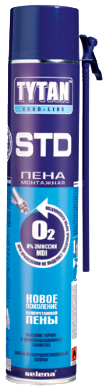
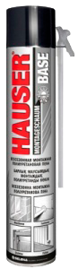
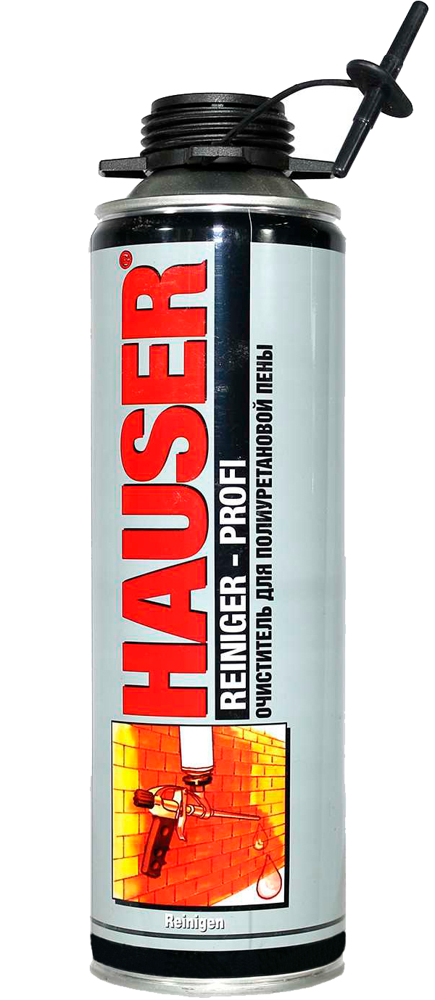
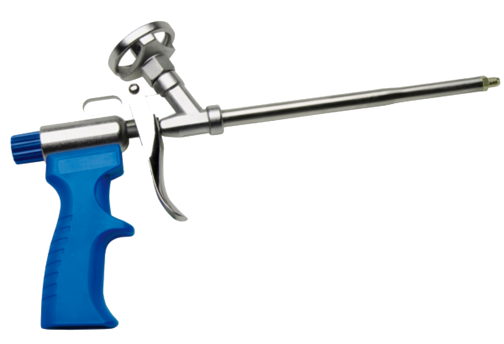

- Время предварительной обработки: до 80 мин.
- Температура применения: от +5°C до +30°C
- Темпeратура баллона: от +15°C до +30°C
- Водопоглощение (после 24 ч.): ≤2,5 %
- Высокий уровень термо и звукоизоляции
- Устойчивость к влаге и плесени
- Производительность: до 42 л
- Класс огнестойкости: F / B3 (EN 13 501 / DIN 4102-1)
- Срок годности: 12 месяцев

- Производительность до 30л. (при темп. +23°C и относительной влажности 50% )
- Пригодна для применения в любое время года. Специальная формула позволяет применять при низких температурах (до -10°C)
- Отличные термо и звукоизоляционные характеристики
- Быстрое затвердение: время покрытия пленкой — 5 минут и возможность обрезки в течение 45 минут
- Превосходная адгезия практически со всеми строительными материалами
- Низкое расширение: гарантирует отсутствие механической деформации дверей и оконных рам
- Экологичность – не разрушает озоновый слой

- Очиститель монтажной пены Hauser Reiniger Profi - это универсальное средство для удаление не отвердевшей полиуретановой пены и клея. Незаменим для очистки клапанов баллонов и пистолетов для нанесения монтажных пен. Не оставляет следов. Средство безвредно для озонового слоя.

Легкий в применении классический пистолет с новым клапаном для эффективного нанесения профессиональной полиуретановой пены.